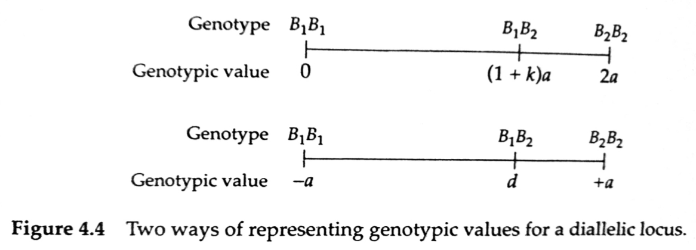
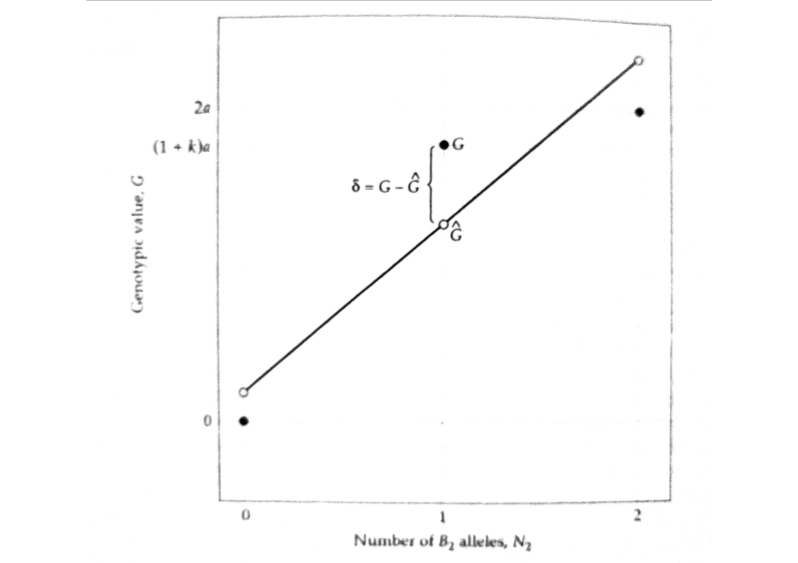

Quantitative Genetics
Decomposition of The Genetic Variance
Instructor: A Augusto F Garcia
/ Statistical Genetics Lab
Department of Genetics, Luiz de Queiroz College of Agriculture,
University of São Paulo (Brazil)
Content
Influence of a locus on the phenotype
Fisher's decomposition of the genotypic value
Partitioning the genetic variance
Additive effects, average excesses, breeding values
Extensions for multiple alleles
Influence of a locus on the phenotype
\[z = G + E\]
- \(G\) is for the whole genotype (which is very complicated)
- Let us start with a single gene

- \(k\) is the dominance
- \(k=0\) (no dominance), \(k=1\) (full dominance), \(k\geq 1\)
(overdominance)
Fisher's decomposition (1918)
- Number of copies of a particular allele: gene content
- Relation between gene content and genotypic value (normally,
non-linear)
- Partitioning genotypic values into their "expected" values based on
additivity (\(\hat{G}\)) and deviations from those expectations
- Deviations: dominance (\(\delta\))
Regression model
\[G_{ij}=\hat{G}_{ij}+\delta_{ij}=\mu_G+\alpha_1N_1+\alpha_2N2+\delta_{ij}\]
- This is a multiple regression model
- However, there is a constraint: \(N_1=2-N_2\)
\[G_{ij}=\mu_{G}+\alpha_1(2-N_2)+\alpha_2N_2+\delta_{ij}\]
\[G_{ij}=\iota + (\alpha_2-\alpha_1)N_2 + \delta_{ij}\]
- Where \(\iota=\mu_G+2\alpha_1\)
- The slope of this regression can be denoted as \(\alpha=\alpha_2-\alpha_1\)
- The (regression )model is therefore
\[G_{ij}=\iota+\alpha N_2 + \delta_{ij}\]
Graphical interpretation

- Notice that
\[\hat{G}_{ij}=\mu_{G}+\alpha_{i}+\alpha_{j} = \left\{
\begin{array}{lr} \mu_G+2\alpha_1 & for\; G_{11}\\
\mu_G+\alpha_1+\alpha_2 & for\; G_{21}\\
\mu_G+2\alpha_2 & for\; G_{22}\end{array}\right.\]
- By taking the expectation of
\(G_{ij}=\mu_G+\alpha_1N_1+\alpha_2N_2+\delta_{ij}\), it can be shown
that
\[\alpha_2=p_1\alpha\]
\[\alpha_1=-p_2\alpha\]
- \(p_1\) (\(p_2\)) is the frequency of allele \(B_1\) (\(B_2\))
- Average effect of allelic substitution (under random mating)
\[\alpha=a[1+k(p_1-p_2)]\]
- It represents the average change in genotypic value that results
when a \(B_1\) allele is randomly substituted for a \(B_2\) allele
- If \(k=0\), \(\alpha=a\)
- If \(p_1=p_2\) (for example, in an \(F_2\) population), \(\alpha=a\)
- With dominance, the effect of an allelic substitution depends on
the status of the unsubstituted allele
- The effect of an allele can only be defined in the context of a
population
Homework
- Read Chapter 2 and 3 of Lynch and Walsh Book